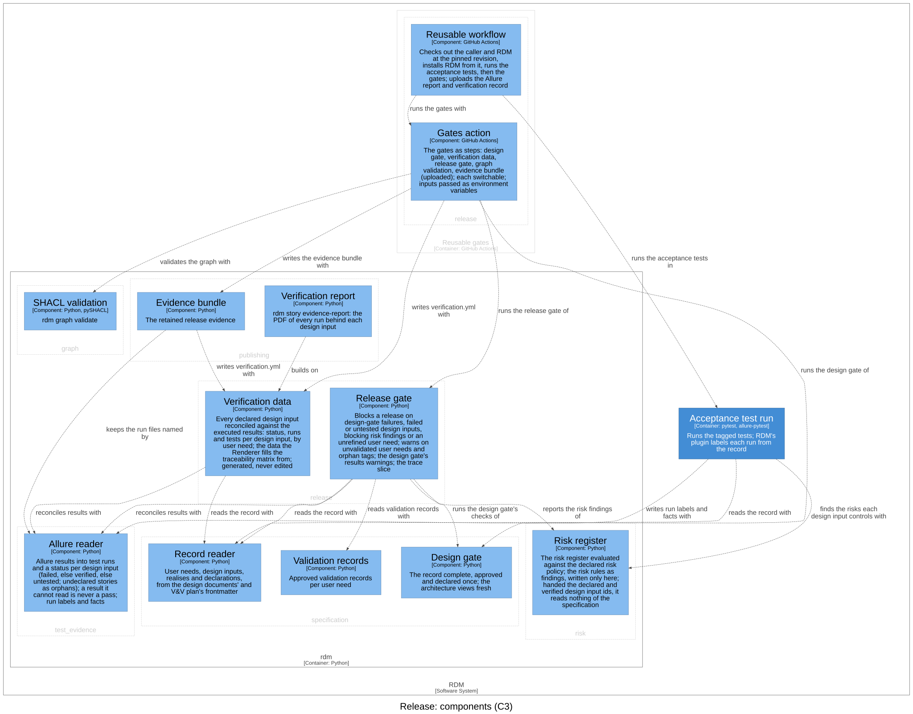
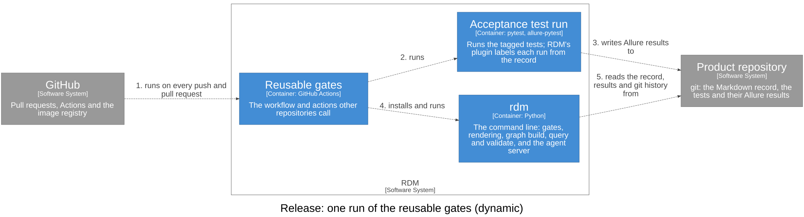

Release — Software Design¶
Id: SDS-REL-001 · Kind: design · Context: release · Realises: DI-33, DI-44, DI-50 · Download as PDF
Design inputs¶
- DI-3 — RDM shall block release unless every declared design input is verified by a passing test.
- Traces to: UN-003
- DI-4 — RDM shall reconcile each declared design input against the story labels of the executed Allure results as verified, failed or untested, and render the traceability matrix of those statuses grouped under the user needs.
- Traces to: UN-004
- DI-76 — RDM's verify shall, when given the unit tests' code coverage as one Cobertura XML or LCOV report, add to the verification data, for each C4 component with code, the lines of its code the unit tests ran out of the lines the report measured, listing apart each component whose code the report does not measure; a report it cannot read shall be an error, never taken as no coverage; and the traceability matrix shall show it.
- Traces to: UN-001, UN-017
- DI-18 — RDM shall report the traceability slice for a given user need or design input (its design inputs / owner+realisers, verifying tests, and status), listing any result it could not read and refusing a missing results directory.
- Traces to: UN-004
- DI-30 — RDM shall produce a release evidence bundle from the record: the verification data and the rendered traceability matrix (with the unit tests' code coverage, and that report kept, when it is given, as verify takes it), the verification report, the executed Allure results with every attachment and container they reference, and a manifest listing the bundle's files and any referenced attachment or result it could not include, written to an output directory apart from the results, replacing an earlier bundle there, and refusing to write a bundle it cannot complete.
- Traces to: UN-012
- DI-63 — RDM shall provide its gates for reuse in another repository's CI: a reusable workflow that runs the repository's acceptance tests and then the design gate, verify, the release gate, graph validation over the named checklists and the evidence bundle with the verification report, uploading the bundle, with RDM installed from the revision the caller pinned rather than a package index; a composite gates action that does the same for workflows of their own; and a composite action that renders the documents with the image of the release it is pinned to (the latest image for a branch or commit). The CI workflow rdm adopt lays down, and RDM's own CI, shall call the reusable workflow, pinned to the installed RDM's version and to the commit under test respectively.
- Traces to: UN-011, UN-003
Purpose¶
release decides whether a release may go ahead and keeps the evidence it
went ahead on: the release gate over the record's verified status, its risks
and its user needs; the verification data and the trace slice the gate and
its reviewers read; and the reusable gates that run all of it in another
repository's pipeline. Its language: a design input is verified (a passing
run of a tagged test, no failed one); the release gate blocks a release;
release-grade evidence is what a release needs; the traceability matrix
is generated, never edited; the evidence bundle is what a release keeps.
It reads the specification, test evidence and risk; none of them reads it.
Design Outputs¶
The design outputs are this context's architecture in the C4 model of the
architecture workspace: its components, what each is responsible for, and
how they relate. They name components, never code: the workspace maps each
component to the code that implements it. Two of the components run in the
rdm container, two in the Reusable gates container that other
repositories' pipelines call.

| Component | Responsibility | Meets |
|---|---|---|
| Release gate | The release decision over verified status, risk and validation; the design gate's warnings about executed results; the trace slice of a user need or design input | DI-3, DI-18; realises DI-33, DI-44, DI-50 |
| Verification data | Every declared design input reconciled against the executed results: the data the traceability matrix and the evidence bundle are built from; given the unit tests' coverage report, each component's unit lines run of those measured, beside the inputs, never inside them | DI-4, DI-30, DI-76 |
| Reusable workflow | Runs a repository's acceptance tests, then the gates, with RDM installed from the revision the caller pinned | DI-63 |
| Gates action | The gate steps, written once: design gate, verification data, release gate, graph validation and the evidence bundle | DI-63, DI-30 |
Release gate. It blocks a release when the design gate's pass/fail
checks fail; when no design input is declared; when a design input failed
or is untested in the given results; when a result file in them cannot be
read (it could hold a failed run); when the risk register's release rules
report a blocking finding; and when a user need is addressed by no design
input. It warns, never blocks, on a user need with no approved validation
record, and on a test tag that matches no design input (compared on its
leading letters, so di-1 or DI_1 is an orphan, not silence). The same
reconciliation of executed results gives the design gate its warnings, which
the composition root hands to the design gate's output, so the
specification never reads results. The trace slice is a user need's design
inputs, or a design input's text, user needs, owner and realising contexts
and, when results are given, its status, its tests (each once) and any
result file that cannot be read; a results directory that does not exist is
refused, as by the gate.
Verification data. For each declared design input: its status, run
counts, tests and their outputs, grouped by user need, with a summary and
the tags that match no design input, and the result files that cannot be
read, which make verify exit non-zero. It is generated, never edited.
Reusable workflow and Gates action. The caller pins the workflow and names the same revision again as an input, because a reusable workflow cannot see the revision it was called at. The workflow checks out the caller's repository with its history and RDM at that revision, installs RDM and the test tools from that checkout (never from a package index), runs the caller's acceptance tests, then the Gates action, and uploads the Allure report and the verification record. The Gates action installs RDM from its own revision unless the caller already has; each gate can be switched off for a record that is not yet ready for it; the verification data and the evidence bundle run only when there are results, and the bundle is uploaded for retention. Inputs reach the steps' scripts as environment variables, never spliced into the script text, so an input cannot inject shell.
Relationships that matter, in the direction of the arrow:
- The release gate runs the design gate's checks, reads the record with the
record reader and the validation records (
specification), reconciles results with the Allure reader (test_evidence) and reports the risk findings of the risk register (risk). - Verification data reconciles results with the Allure reader and reads the record with the record reader.
- The Reusable workflow runs the acceptance test run and then the gates with
the Gates action, which runs the design gate, writes the verification data,
runs the release gate, validates the graph with SHACL validation (
graph) and writes the evidence bundle with the Evidence bundle (publishing).
This context realises parts of specification's DI-33 and risk's DI-44
and DI-50: the release gate reports and applies them. Parts of its own are
realised elsewhere: DI-4 by test_evidence (the run labels behind the
reconciliation) and publishing (the traceability matrix rendered from the
verification data); DI-30 by publishing, whose Evidence bundle writes the
retained release evidence; and the rest of DI-63 by the PDF action
(publishing) and by the CI workflow rdm adopt lays down (the Adoption
templates, specification). The verification report (DI-64) is also in
publishing; the mutation probe and the pytest plugin are in
test evidence. Each design input here is verified by the
tests tagged with its id.
Open question: the release gate does not decide whether the runs are release-grade evidence (the commit and worktree each run tested); the verification report and, as a warning, the knowledge graph's gate shapes show it. Whether the gate should decide it is a question for a later review.
Dynamic view¶
The order of a pipeline run matters: the acceptance tests write the Allure
results; the design gate runs; the verification data is written; the release
gate decides; graph validation runs; the evidence bundle is written last,
from the same results, and uploaded. The component view shows what uses
what, not this order. The view below draws it at the container level, where
the order is decided (a dynamic view's steps cannot cross from the Reusable
gates container into the components of rdm):

Commands and events¶
Each row: the actor issues the command, resulting in its success event or a fail event (the rule broken, after the slash), which affects the entity.
| Actor | Command | Success event | Fail events | Entity |
|---|---|---|---|---|
| CI or contributor | Verify | Verification Written | — (each input verified, failed or untested) | Verification data |
| CI or contributor | Decide release | Release Permitted | Release Blocked / Design Control Unmet · Input Untested · Unreadable Result · Need Unaddressed · Risk Finding | Release |
Dependencies¶
Layer 4 of the dependency rule. Depends on test_evidence (the Allure
reader), specification (the record reader, the design gate, the validation
records) and risk (the risk register), all below it, and on the shared
kernel. Depended on by publishing (the verification report and the
evidence bundle build on the verification data) and by the composition
root, which hands the design gate this context's warnings about executed
results. The Gates action, in its own container, also runs graph's SHACL
validation and publishing's evidence bundle as commands; that is a run,
not an import, so the rule is not broken.